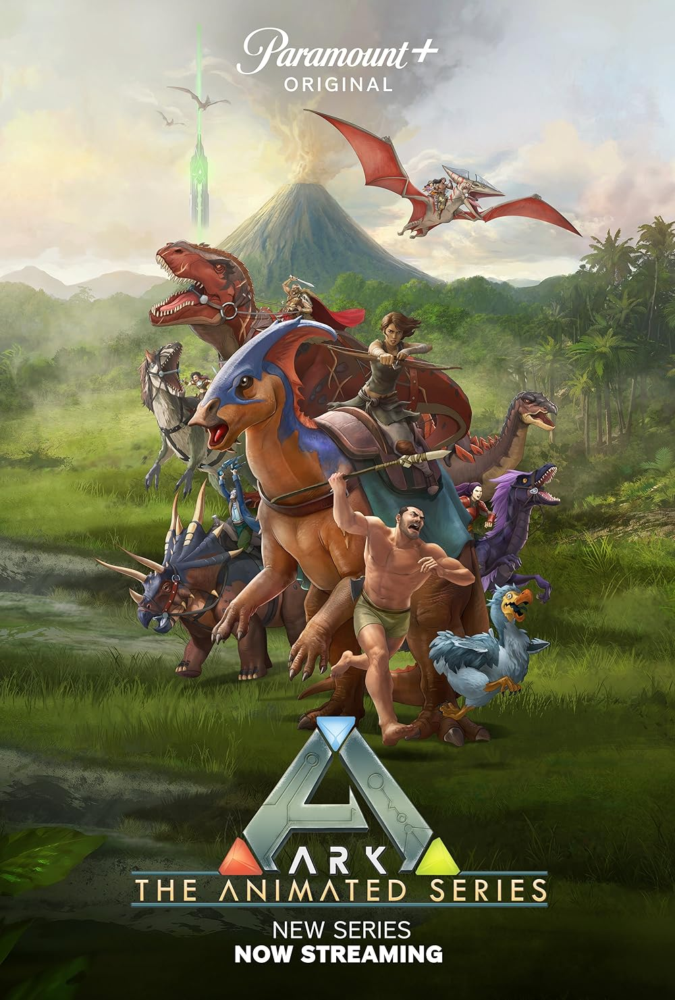
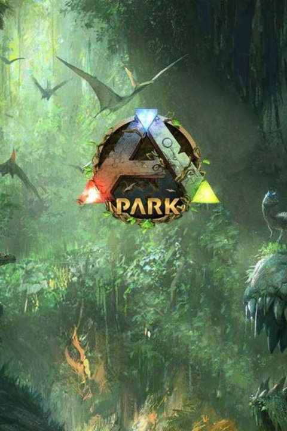
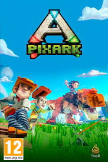

Bienvenido a tu wiki de Ark de confianza, aqui te enseñare lo escencial para que comiences tu aventura de supervivencia por las arcas😎😎
Ark o mejor conocido como Ark Survival Ascended, es un videojuego de supervivencia ambientado en el antiguo mundo de los dinosaurios, asi como en los mitos de criaturas fantasticas. En este mundo deberas de desarrollar a tu personaje si quieres sobrevivir a los peligros que las arcas presentan, aprenderas a construir, crear, recolectar recursos y domesticar a las salvajes criaturas que te rodean.
Ark es una gran franquicia que cuenta no solamente con el Survival Ascended, sino que tambien existe el Ark Survival Evolved el cual es un juego con menores requisitos, tambien existe una serie animada donde se cuenta la historia completa de la franquicia, tambien hay otros juegos poco conocidos como Pixark, Ark Park y Ark II.
  